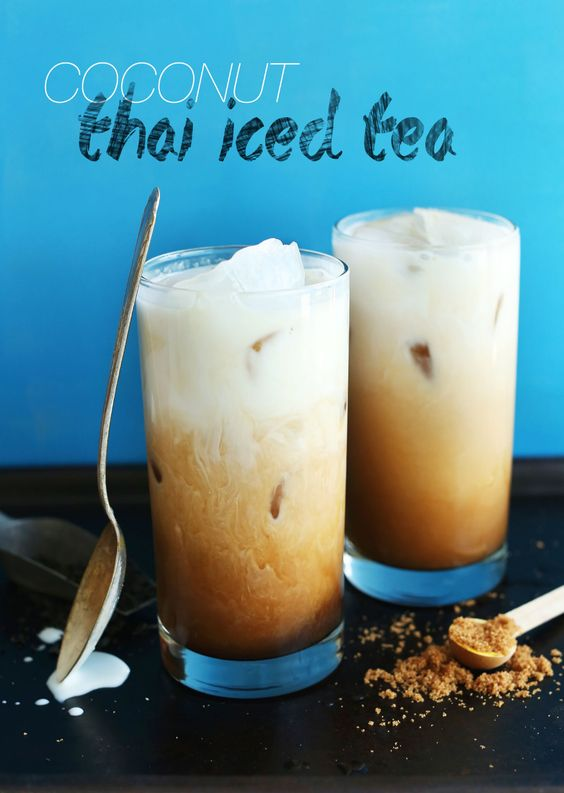

Thai Iced Tea

This Thai iced tea is the perfect drink for summer. It's chilling, sweet, and light.
Ingredients
- 4 cups water
- 2 tablespoons loose leaf black tea
- 1/4 cup maple syrup or agave nectar
- 1/4 cup brown sugar
- 1 teaspoon vanilla extract
- 1 14-ounce can coconut milk
Instructions
- In a large saucepan, bring water to a boil.
- Once boiling, remove from heat and allow bubbles to subside, then add tea and stir. Let steep for 5 minutes.
- Pour tea over a strainer into a pitcher or bowl to remove the tea leaves. At this time add maple syrup, sugar, and vanilla. Whisk together, then sample and adjust sweetness as desired.
- Set in refrigerator to chill for 2 hours.
- Once the tea is chilled, prepare glasses with ice and fill with tea until glass is 3/4 full, then top with coconut milk.
- Stir gently and enjoy!!